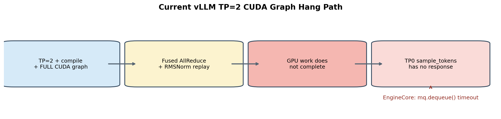
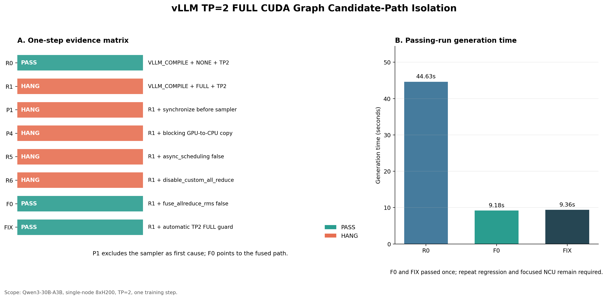

用可复核的数字描述贡献，也明确数字不能证明什么。
从问题到验证的工程闭环


根因、修复与验证
时间：2026-06-23 至 2026-07-15 核心结论：vLLM TP=2 + FULL CUDA Graph rollout hang 的 GPU 首因是 FlashInfer 0.6.4 MNNVL fused allreduce + RMSNorm 中的 Lamport sentinel 判断受 FTZ 影响；回移官方修复或升级到 0.6.12 后，两卡最小复现与模型级 graph replay 均通过。 公开边界：不包含内部仓库、节点、模型路径、原始 trace、运行 ID 和构建产物。
文档入口
- Lamport sentinel 与 FTZ hang 机制详解：解释 BF16 packed payload、FTZ predicate、永久 polling、级联阻塞和位级修复。
1. 现象与隔离
外层最初表现为 sample_tokens RPC timeout 和 engine-dead 类错误，但 sampler、D2H copy 与消息队列都是等待上游 GPU 工作完成的下游位置。通过 TP1/TP2、eager/FULL graph、fused/unfused 和 PDL 开关的控制变量实验，问题被缩小到 TP=2 FULL graph replay 中的 fused allreduce + RMSNorm 路径。
2. 根因
旧实现使用浮点比较识别 Lamport -0.0 sentinel。在 fast-math/FTZ 语义下，合法的 FP32 负次正规数可能在比较时被当成 -0.0，worker 因而进入永久轮询。
修复采用精确 bit-pattern 比较识别 0x80000000，避免浮点比较被 FTZ 改写。该修复对应 FlashInfer 官方 PR #3304。
3. 验证结果
| 验证 | 修复前 | 修复后 |
|---|---|---|
| 目标 16×16 FULL graph | 0/3 通过 | 2/2 通过 |
| 精确 prompt-9 用例 | 0/1 通过 | 3/3 通过 |
| 模型级 graph off | - | 2/2 通过 |
| 模型级 graph on | - | 2/2 通过 |
目标 SASS FSETP.*.FTZ |
8 处 | 0 处 |
| FlashInfer 0.6.12 隔离回归 | - | eager、5 次 graph replay、prompt-9、16×16 全部通过 |
4. 当前建议与边界
- 需要保持旧依赖时，使用 FlashInfer 0.6.4 + PR #3304 回移，并清理旧 JIT cache 后重新构建。
- 长期方案是升级到已经包含等价修复的新版 FlashInfer，并重新完成依赖和模型回归。
- 当前已闭环两卡最小复现和模型级 AsyncLLM 回归；完整大规模 RL
main_ppo仍需最终验收。 - CUDA Graph off/on 的性能差异属于 graph 模式收益，不能归因成两行 sentinel 修复带来的性能提升。
5. 月报一句话
定位并修复 FlashInfer 0.6.4 在 vLLM TP=2 + FULL CUDA Graph 下因 FTZ 误判 Lamport sentinel 导致的 rollout hang，回移补丁和 FlashInfer 0.6.12 均通过两卡最小复现与 graph replay 回归。
FTZ、Lamport Sentinel 与永久轮询机制
日期：2026-07-17
范围：解释 vLLM TP=2 + FULL CUDA Graph 下 FlashInfer MNNVL fused allreduce + RMSNorm hang 的位级机制、传播路径和修复语义。
核心结论：旧实现不是把 payload 在内存中改成了-0.0，而是 FTZ 浮点比较把合法负次正规 payload 误判为-0.0sentinel；polling 因而永远认为数据尚未到达，最终表现为sample_tokensRPC timeout。
1. 问题背景与结论边界
目标问题出现在以下组合中：
| 项目 | 配置 |
|---|---|
| GPU | 2×NVIDIA H200，SM90 |
| 模型 | Qwen3-30B-A3B，BF16 |
| vLLM | 0.16.0rc1 调试路径 |
| rollout TP | 2 |
| 执行模式 | vLLM compile + FULL CUDA Graph |
| 通信融合 | FlashInfer MNNVL fused allreduce + RMSNorm |
| 旧 FlashInfer | 0.6.4 |
外层最初只能看到：
sample_tokens RPC timeout
-> EngineCore wait_for_response
-> shm_broadcast mq.dequeue
-> EngineDeadError
控制变量实验进一步证明：
FULL graph + fused是目标失败路径；FULL graph + unfused可以完成；compile-only + fused可以完成；- sampler、D2H copy、RPC 和 MQ 都是上游 GPU 工作不完成后的等待点；
- PDL on/off 都不能消除旧实现的失败。
本报告解释已经闭环的 kernel 机制，但不声称本地曾直接保存原始 R3 hang 中“某一层、某一个 lane”的具体负次正规 bit pattern。代表模式 0x80010000 来自上游修复说明和定向回归设计；本地因果结论来自 source、SASS、控制组和补丁前后 A/B 的共同证据。
2. Lamport sentinel 在这里做什么
MNNVL oneshot kernel 需要判断远端 rank 的 multicast 数据是否已经覆盖通信 buffer。它没有给每一个 payload lane 额外设置独立 ready flag，而是先将待写区域填成一个不应与正常数据混淆的 sentinel：
FP32 -0.0
bit pattern = 0x80000000
消费者的核心逻辑可以简化为：
while (true) {
// 一次 volatile load 读取 128 bit。
float4 value = loadPackedVolatile<float4>(ptr);
bool valid = true;
for (int i = 0; i < 4; ++i) {
valid &= !isNegZero(value[i]);
}
if (valid) {
break;
}
}
完整状态变化为：
flowchart LR
A[轮转到当前 Lamport buffer] --> B[用 0x80000000 初始化各 32-bit lane]
B --> C[远端 rank multicast 写入真实 payload]
C --> D[本地线程 volatile load]
D --> E{是否仍有精确 sentinel}
E -- 是 --> D
E -- 否 --> F[执行 AllReduce 和 RMSNorm]
F --> G[更新 current/dirty buffer 状态]
这里的 float4 首先是 128-bit 搬运载体。对于 BF16 输入，一个 32-bit float lane 实际承载两个 BF16 元素，polling 阶段不应把这 32 bit 当成普通 FP32 数值做近似语义判断。
3. 旧判断为什么看起来合理
旧实现为：
return val == 0.F && signbit(val);
设计意图是利用 IEEE-754 的两个事实：
+0.0 == 0.0和-0.0 == 0.0都为真；signbit(+0.0)为假，signbit(-0.0)为真。
在保留次正规数的严格浮点比较下，二者结合确实只会匹配 -0.0。问题在于目标 JIT kernel 使用 -use_fast_math，它隐含：
--ftz=true
--prec-div=false
--prec-sqrt=false
--fmad=true
其中 FTZ 是 Flush To Zero。NVIDIA PTX 对 setp.ftz.f32 的定义是：FP32 次正规输入在参与比较时，被视为保留符号的零。
4. FTZ 如何制造 sentinel 假阳性
FP32 的几个关键 bit pattern：
| 位模式 | 类别 | FTZ 下 val == 0 |
signbit |
旧判断结果 |
|---|---|---|---|---|
0x00000000 |
+0.0 |
true | false | false |
0x80000000 |
-0.0 sentinel |
true | true | true |
0x00000001 |
最小正次正规数 | true | false | false |
0x80000001 |
最小负次正规数 | true | true | true，误判 |
0x807fffff |
最大负次正规数 | true | true | true，误判 |
0x80800000 |
最小负正规数 | false | true | false |
因此在 FTZ 比较语义下，旧 predicate 实际匹配的不是单独一个值：
预期：0x80000000
实际：0x80000000
以及 0x80000001 ... 0x807fffff
需要特别区分两个动作：
ld.volatile.global.v4.f32将原始 bit 读入寄存器；FSETP.*.FTZ在浮点比较时将次正规输入按带符号零处理。
FTZ comparison 不等于“global memory 中的 payload 被永久写成零”。原始 bit 仍然存在，位级比较仍可读取它；错误发生在 FP predicate 的解释方式上。
5. BF16 payload 为什么会形成 FP32 负次正规模式
目标 kernel 的模板组合为：
PackedType = float4
T = bfloat16
float4 共 16 bytes，因此承载 8 个 BF16；每个 32-bit lane 承载两个 BF16。假设小端顺序下，相邻两个 BF16 为：
低 16 bit：0x0000 // BF16 +0
高 16 bit：0x8001 // BF16 最小负次正规数
原始 32-bit lane 为：
0x80010000
从 BF16 payload 角度，这是两个合法元素；从 FP32 bit layout 临时解释，它又恰好是一个负 FP32 次正规数：
0x80010000 != 0x80000000
正常 polling 应判断“真实数据已经到达”。旧代码在 FTZ 下却得到：
val == 0.F // true：comparison 将负次正规输入按 -0 处理
signbit(val) // true：原始最高位为 1
最终将合法 payload 错当成 sentinel。
kernel 在写入前已经会把精确 BF16 -0.0转换成 +0.0，避免真正的 payload 与 sentinel 冲突；但 0x8001 是合法负次正规 BF16，不是精确 -0.0，不应被清洗。漏洞正是出现在随后按 FP32 检查 packed lane 的步骤。
6. 为什么错误会变成永久 hang
producer 已经完成一次真实 payload 写入，之后不会为了满足 poller 再次改写这个位置。假设该位置稳定为 0x80010000，旧 poller 的状态为：
读取 0x80010000
-> FTZ 浮点比较误判为 sentinel
-> 继续等待
-> 再次读取同一个 0x80010000
-> 再次误判
-> 永久轮询
只需要少数 thread/lane 命中该模式，就会产生级联阻塞：
flowchart TD
A[部分线程卡在 Lamport polling] --> B[同 warp 其他线程进入 full-mask shuffle]
B --> C[__shfl_xor_sync 等不到全部 lane]
C --> D[其他 warp 卡在 __syncthreads]
D --> E[其他 CTA 卡在 cluster barrier]
E --> F[fused AllReduce + RMSNorm kernel 不结束]
F --> G[sampled-token D2H / CUDA synchronize 不结束]
G --> H[TP worker 无法返回 sample_tokens]
H --> I[RPC timeout / EngineDeadError]
这解释了为什么 EngineCore 的最终栈位于 mq.dequeue()：RPC 和共享内存队列只是下游观察点，真正没有完成的是 GPU producer。
FlashInfer issue #3053 的 cuda-gdb 证据也显示：部分线程停在 loadPackedVolatile/isNegZero polling，其余线程分别停在 warp shuffle、block barrier 和 cluster barrier。
7. CUDA Graph 和 fused RMSNorm 分别扮演什么角色
CUDA Graph 不是 FTZ 的来源。FTZ 来自目标 kernel 的编译选项及其浮点比较指令。
Graph replay 在本问题中是稳定暴露条件：
- FULL graph 走到目标 fused MNNVL kernel；
- Lamport buffers、地址和迭代状态被反复使用；
- 特定模型 payload 命中会发生碰撞的负次正规 bit pattern；
- 错误 polling 因而稳定出现。
因此以下两个说法需要同时成立：
- 不能因为 eager 或随机 standalone 通过，就断言 sentinel 实现正确；随机输入可能没有命中触发 bit pattern。
- 不能说“CUDA Graph 把数值变成了
-0.0”；Graph 只是让错误 kernel、状态和数据组合进入了可稳定复现的执行路径。
fuse_allreduce_rms=False 可以通过，是因为它避开了目标 fused polling kernel；这是一种规避方式，不是修复了 sentinel protocol。
8. 位级修复为什么正确
FlashInfer PR #3304 将判断改为：
constexpr uint32_t kNEGZERO_FP32 = 0x80000000U;
return __float_as_uint(val) == kNEGZERO_FP32;
新判断只回答一个问题：
这 32 bit 是否精确等于 0x80000000？
因此：
0x80000000 -> sentinel
0x80000001 -> 合法负次正规 payload
0x80010000 -> 合法 packed payload
修复的性质：
- 使用原始位模式和整数 equality，不受 FTZ 影响；
- 不改变 AllReduce、residual、RMSNorm、PDL 或 CUDA Graph 的数学公式；
- 不改变通信 buffer layout 和 ABI；
- 不需要为了一个 sentinel predicate 全局关闭
-use_fast_math； - 保留 fast-math 的性能路径，同时恢复 polling 的活性。
直接删除 -use_fast_math 不是首选修复，因为它还会同时改变 division、sqrt、FMA 和数学库行为，影响面远大于 sentinel 判定。既然 sentinel 本来就是一个精确 bit pattern，就应该用精确 bit comparison 表达协议契约。
9. 本地与上游证据
| 验证项 | 旧 0.6.4 | PR #3304 backport |
|---|---|---|
| 16 requests × 16 tokens，FULL graph fused | 0/3 PASS | 2/2 PASS |
| 精确 prompt-9 | 0/1 PASS | 3/3 PASS |
目标 kernel FSETP.*.FTZ |
8 | 0 |
| compile-only fused control | PASS | PASS |
| FULL graph unfused control | PASS | PASS |
FlashInfer 0.6.12 已包含同类修复，并通过本工程的 eager、graph replay、prompt-9 和 16×16 两卡验证。上述数字用于证明活性修复；它们不代表完整 8×H200 RL main_ppo 已经完成最终生产验收。
上游资料：
- FlashInfer PR #3304：bitwise sentinel fix
- FlashInfer issue #3053：oneshotAllreduceFusionKernel graph replay hang
- PR #3304 merge commit
- NVIDIA NVCC
-use_fast_math - NVIDIA PTX
setp.ftz.f32
10. 部署和验证要求
只修改 header 不足以生效。trtllm_mnnvl_allreduce.cuh 会被 JIT 编译进入：
trtllm_mnnvl_comm.so
部署必须同时满足：
- worker 实际导入 patched FlashInfer package/header；
- 使用 patched header 重新生成 JIT
.so，不能复用旧 cache； - 验证 fused path、MNNVL backend 和 FULL graph replay 确实发生；
- 运行 eager fused、graph unfused、graph fused 等控制组；
- 对目标失败用例进行 fresh-process 重复；
- 检查 worker 正常退出且没有残留 GPU 进程。
源码和 binary 的基本审计方式：
#### source：只允许位级 sentinel 判断
rg -n 'kNEGZERO_FP32|__float_as_uint|val == 0\.F && signbit' \
<flashinfer-package>/data/include/flashinfer/comm/trtllm_mnnvl_allreduce.cuh
#### binary：确认目标 kernel 不再包含危险的 FTZ FP predicate
cuobjdump --dump-sass <trtllm_mnnvl_comm.so> \
| rg 'oneshotAllreduceFusionKernel|FSETP.*FTZ'
验收不能只看 FlashInfer version string。回移补丁后版本仍可显示 0.6.4；真正需要核对的是 header、JIT workspace、.so identity、SASS 和功能回归。
11. 一句话总结
FlashInfer 0.6.4 把 Lamport -0.0 sentinel 当作浮点值比较，fast-math/FTZ 因而会将合法负次正规 packed payload 误判成“数据未到达”，造成 MNNVL fused kernel 永久轮询；PR #3304 改用 0x80000000 精确位比较后消除了碰撞，且不改变 AllReduce/RMSNorm 数学结果。
给 leader 的汇报话术
R3 rollout 在 TP=2 + FULL CUDA Graph 下的 sample_tokens timeout 已定位到 FlashInfer 0.6.4 MNNVL fused allreduce + RMSNorm kernel。旧代码在 fast-math/FTZ 下用浮点比较识别 -0.0 sentinel，会把合法负次正规 payload 误判成未就绪，导致 GPU polling 永久不退出；将判断改成 0x80000000 精确位比较并重建 JIT cache 后，原失败用例和 SASS 回归均通过。该修改是活性修复，不改变 fused 算子的输出公式；完整 8 卡 RL 训练仍作为生产验收边界保留。
这项工作支持“定位并修复现用版本、完成回移和回归”，不声称本人原创 FlashInfer 上游 PR；CUDA Graph 的性能收益也不能归因于两行 sentinel 修复。